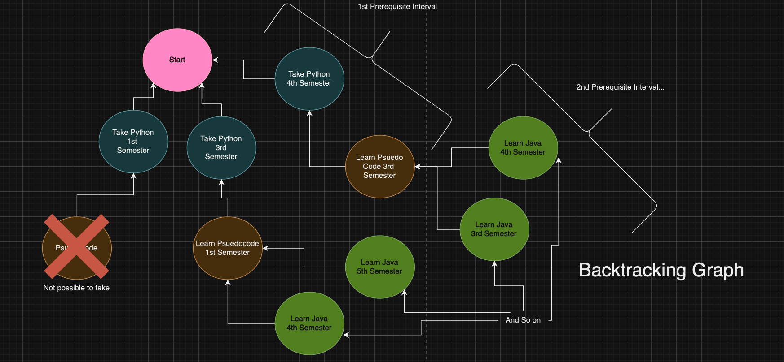

A Spring Boot micro-service based backend implementation of a course scheduling site - drag image below to view full diagram
Often times, it is dauting for students to try and plan their courses out when first entering college. Students have to decide what courses to take, when to take it, and to ensure that all requirements are filled so they can safely enroll in the class. To simply this process, I created an backtracking algorithim to automate the process of evenly distributing your workload, making sure prerequistes are taken, and making sure courses are taken by certain deadlines.
The algorithim I came up to solve the issue of finding the best course schedule given constraints, involves in backtracking all possible combinations of "prerequisite intervals". The prerequiste intervals are created by flattening out DFS traversals in the prerequiste node graph to get a sequence of courses that are organized by older courses first. (Picture Above) To find all possible schedules, I iterated through each of the intervals independently, and in seperate layers, to construct the backtracking tree and allow me to pick the most optimal schedules (second image below) .
Currently I am accessing Neo4J with Spring Data JPA for this project to store the course data along with each course's relation of prerequisites in a graph database, however there seems to be a lack of support, so perhaps a migration to AWS DynamoDB is in sight.
External applications can access the application using a RESTful API, which routing is determined by the API Gateway. The application is also containerized using Docker.
The API Gateway is secured with oauth2.0 where jwt token generation is handled by Keycloak using private credentials. The discovery server also uses in-memory security where passwords are stored as byte-encodings to authenticate users who view the browser interface.
Each microservice and the API gateway is connected to a discovery service through http using spring Spring Web. Load balancing between duplicate microservices is done with round robin. Circuit breakers were also implemented between microservices. Kraft (Kafka without zookeeper) was also used to support email notifications.
Implemented integration testing using Docker Images, logging, and distributed tracing for easier debugging. Dockerized service using muultiple layers